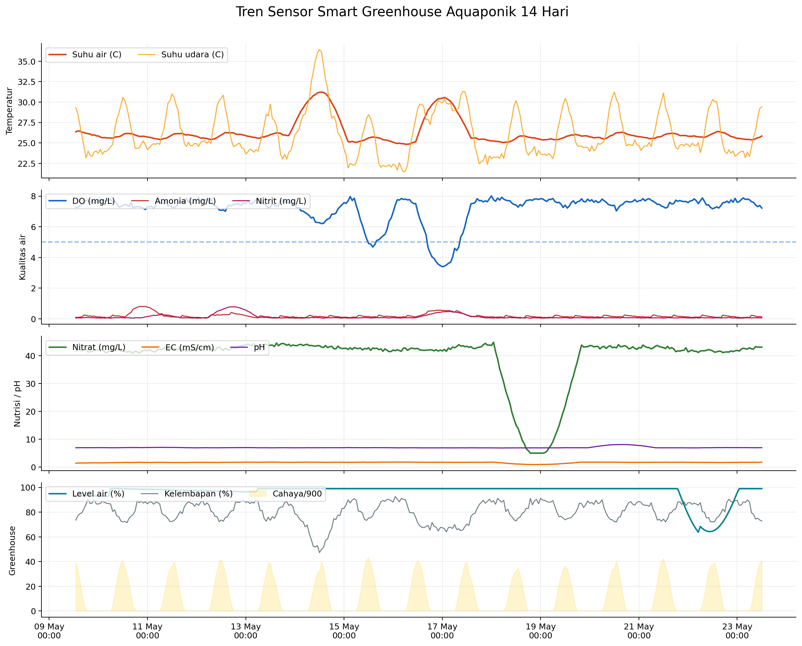
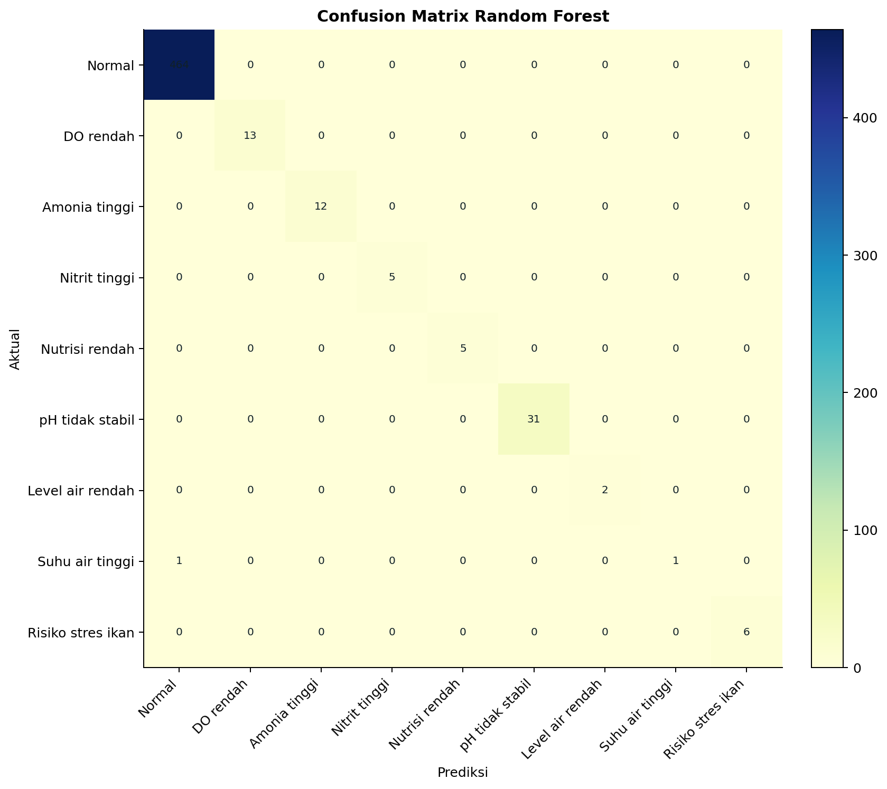

pH air
6.95
AI Aquaponik Monitoring
Smart Greenhouse Aquaponik
Monitoring ikan nila dan selada dengan sensor numerik, Random Forest Classifier, rekomendasi, dan tindakan semi-otomatis.
12parameter sensor
9kelas kondisi AI
0.963macro F1 model
sensorpreprocessingAIklasifikasirekomendasitindakan semi-otomatisdashboard
Suhu air
25.84
C
DO
7.22
mg/L
Amonia
0.118
mg/L
Nitrit
0.065
mg/L
Nitrat
43.01
mg/L
EC
1.744
mS/cm
TDS
874.90
ppm
Level air
99.00
%
Suhu udara
29.43
C
Kelembapan
72.87
%
Cahaya
36.856
lux
Tren Sensor 14 Hari
Pola sensor dibuat mengikuti dinamika greenhouse: cahaya dan suhu berpola harian, DO turun saat suhu air meningkat, serta nutrisi berubah bertahap.

Status AI

Feature Importance

Evaluasi model
Accuracy 0.998
Macro F1 0.963
Weighted F1 0.998

Pembacaan terakhir
| Waktu | DO | Suhu air | pH | NH3 | NO2 | Status | Risiko |
|---|---|---|---|---|---|---|---|
| 23 May 03:00 | 7.88 | 25.48 | 6.97 | 0.089 | 0.050 | Normal | 28.4 · Normal |
| 23 May 04:00 | 7.78 | 25.43 | 6.98 | 0.091 | 0.065 | Normal | 26.8 · Normal |
| 23 May 05:00 | 7.80 | 25.43 | 6.97 | 0.102 | 0.066 | Normal | 33.7 · Warning |
| 23 May 06:00 | 7.76 | 25.42 | 6.97 | 0.085 | 0.069 | Normal | 28.2 · Normal |
| 23 May 07:00 | 7.63 | 25.38 | 6.96 | 0.229 | 0.058 | Normal | 0.0 · Normal |
| 23 May 08:00 | 7.59 | 25.41 | 6.95 | 0.206 | 0.065 | Normal | 0.0 · Normal |
| 23 May 09:00 | 7.42 | 25.52 | 6.93 | 0.170 | 0.072 | Normal | 0.0 · Normal |
| 23 May 10:00 | 7.31 | 25.63 | 6.95 | 0.126 | 0.064 | Normal | 0.0 · Normal |
| 23 May 11:00 | 7.39 | 25.69 | 6.95 | 0.154 | 0.062 | Normal | 0.0 · Normal |
| 23 May 12:00 | 7.22 | 25.84 | 6.95 | 0.118 | 0.065 | Normal | 0.0 · Normal |
Catatan akademik
Dataset dummy dibangun dengan dinamika greenhouse: suhu dan cahaya berpola harian, DO menurun saat suhu naik, amonia meningkat setelah pakan, nitrit mengikuti respons biologis, nitrat/EC berubah lambat, dan level air turun bertahap.
- OSU Extension: aquaponic pH 6.5-7.5 should be maintained; fish pH target near neutral. sumber
- OSU Extension: tilapia optimal water temperature listed around 74-80 F. sumber
- UF/IFAS: dissolved oxygen is a primary fish-production water quality parameter. sumber
- UF/IFAS: ammonia is a key intensive-system fish risk after oxygen; low oxygen can disrupt nitrification. sumber
- FAO small-scale aquaponics: oxygen, pH, ammonia, nitrite, nitrate, and temperature are core monitoring variables. sumber